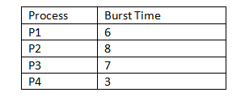
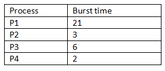

Multiple Choice Question:
- In SJF algorithm, when CPU is available, it is assigned to the process that has the ________
- Consider the SJF scheduling, consider the following set of processes with the length of the CPU burst given in milliseconds. What is the average waiting time? 
- What is the real difficulty with the SJF algorithm?
- Which type of problem arises due to SJF algorithm?
- Consider the following processes that are available in the ready queue for execution, with arrival time as 0 for all and given burst times. What is the average waiting time? 
a) Smallest next CPU burst.
b) Largest next CPU burst.
c) Average next CPU burst
c) Exponential CPU burst
a) 11 milliseconds
b) 7 milliseconds
c) 6 milliseconds
d) 9 milliseconds
a) Calculate average waiting time
b) Calculate turnaround time
c) Knowing the length of the next CPU request
d) Finding the waiting time
a) Larger waiting time
b) Smaller execution time
c) Increase in average waiting time
d) Starvation
a) 4.5 ms
b) 6.5 ms
c) 4.67 ms
d) 7.8 ms